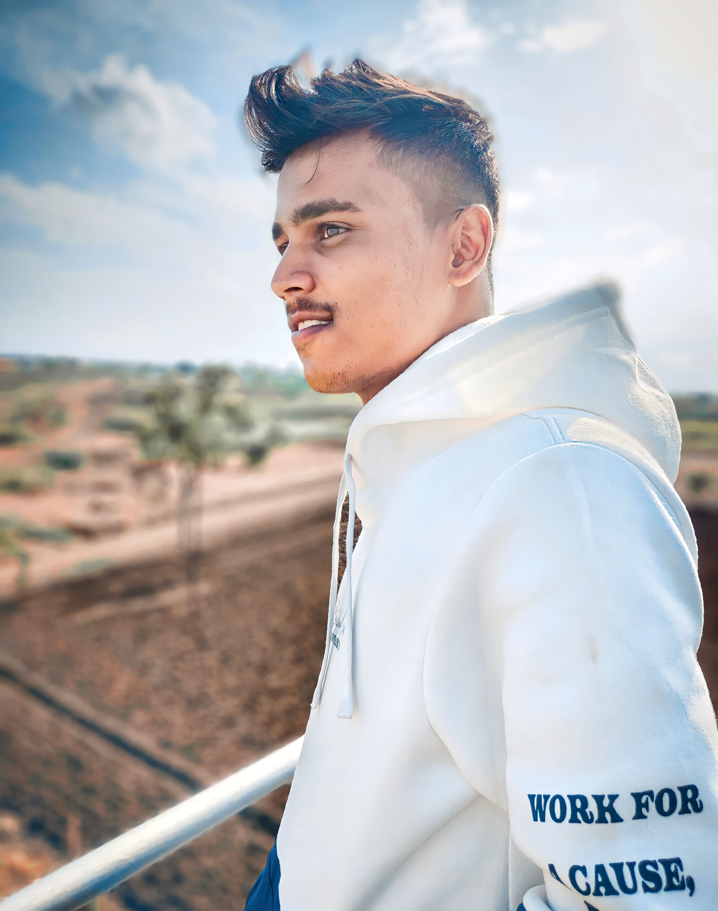

Profile Summary
- As a React Developer having knowledge about front-end technologies.
- Good Hands-on experi ence on HTML 5, CSS, Bootstrap, JavaScript, React.
- Responsive design using CSS & Bootstrap. Good knowledge of Scrum, Agile and GIT.
- Experience in using Integrated Development Environment like Visual Studio Code.
- Excellent Logical, Analytical, Presentation skills and communication skills willing to take extra responsibilities.
Education
- B.Tech - 2019-2023 : Adrsh Institute Of Technology And Research Center,Vita.
- HSC - 2019 : Shri Fattechand Jain Jr.College,Chinchwad.
- SSC - 2017 : Shri Vijay Vitthal Highschool,Sonyal.
Work Experience
WEB DEVELOPMENT INTERN - CODEMIND TECHNOLOGY, PUNE.(January – July 2023)
- Worked with the development team and get mentored under senior developers to improve development quality and efficiency.
- Created wireframes, prototypes, and high-fidelity mockups for a variety of web and mobile projects.
- Worked closely with clients to understand their needs and goals and translate them into effective development solutions.
REACT DEVELOPER – CODEMIND TECHNOLOGY, PUNE.(July 2023)
- Built and maintained responsive and dynamic web applications using React.js, improving user experience across multiple devices.
- Implemented state management using Redux and Context API, which enhanced data flow and reduced application complexity.
- Designed and developed reusable components, leading to a 30% reduction in development time for new features.
- Worked closely with UX/UI designers and backend developers to deliver high-quality features within agile sprint.
- Used Git and GitHub for version control, ensuring smooth collaboration and continuous integration.
- Worked Closely On Projects Like E Commorce Platform as a React Developer in team.
Skills
- React JS
- JavaScript
- CSS3
- HTML5
- EcmaScript6
- Bootstrap
- AJAX
- Git
- Redux
- JSX
- Json
- Jira
- Hooks
Achievments
- District Level Cricket Player
Profile Photo
